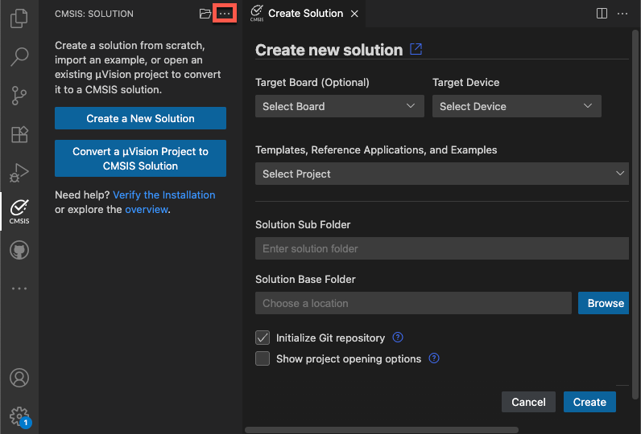
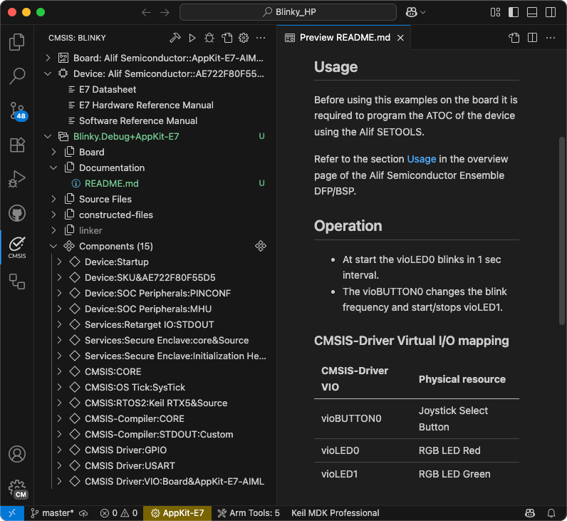
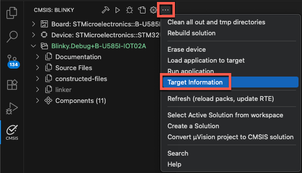
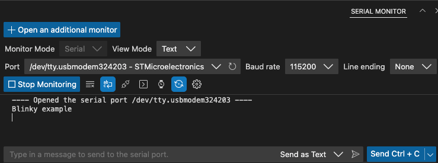

Create new solution
This section explains how to create a CMSIS solution-based project that is using CMSIS-Packs.
In the  CMSIS view, click Create a New Solution. If you already have a
solution opened, use the menu (...) item Create a Solution.
CMSIS view, click Create a New Solution. If you already have a
solution opened, use the menu (...) item Create a Solution.

The Create new solution dialog allows to start projects based on a Target Board or Target Device selection.
Examples, templates, and reference applications depend on the selected board or device and on installed CMSIS-Packs.
-
Examples are created for a specific hardware or evaluation board. These are typically complete projects that directly interface with board and device peripherals.
-
Reference Applications use defined interfaces (APIs) and are therefore hardware agnostic. These projects require the installation of related CMSIS-Packs and additional software layers for an evaluation board.
-
Templates are stub projects that help you getting started. Some CMSIS-Packs may contain device-specific templates.
Further settings include:
-
The Solution Sub Folder is typically a sub-directory in your workspace.
-
The Solution Base Folder specifies your workspace location that may contain multiple projects.
-
With Initialize Git repository the related
.gitignorefile is created. -
Show project opening options allows you to open the solution a new instance of VS Code. By default, it is loaded into the current VS Code instance.
Work with examples
- Click the Target Board (Optional) drop-down list.
- Enter a search term tp filter the list and then select your board. The details of the selected board are displayed.
- Click Select.
Next, select the example project. There are two types of example projects (available either from Local packs and/or from the Web):
-
Csolution Examples are using Keil Studio's native project format.
-
uVision Examples are in
*.uvprojxformat and are converted automatically.
To verify the Keil Studio installation, select a Blinky project for example.
Specify a Solution Base Folder and click Create.
Note
First time users may need to confirm that the Arm Tools Environment Manager extension can automatically
activate the workspace and download the tools specified in the vcpkg-configuration.json file included in a
project.
A typical Blinky example includes a REAMDE.md file that contains valuable information about the hardware setup and
specific tasks that need to be done before working with the target board:

Continue to build the project.
Work with reference applications
Reference applications show the usage of middleware, software libraries, and custom code that can run on many different target hardware boards. Examples display only if you selected a board and a software layer is available for that board. Reference applications are not dependent on specific hardware. You can deploy them to various evaluation boards using additional software layers that provide driver APIs for specific target hardware. Layers are provided using CMSIS-Packs.
Reference applications are available with these CMSIS-Packs:
-
MDK-Middleware: use software components for IPv4 and IPv6 networking, USB Host and Device communication, and file system for data storage.
-
SDS Framework: record real-world data off a device and playing it back on Arm Virtual Hardware.
-
LiteRT: demonstrates the fundamental integration and usage of the LiteRT stack for ML inference on a microcontroller.
Attention
You need to have the CMSIS-Packs installed before you can create a new reference application. Please follow the instruction for installing packs.
Configuration
Reference applications use software layers that help scaling example projects to many different target boards. To be able to use the selected board with the reference application, you need to configure the solution and select an appropriate layer.
More information about the layer requirements and other configuration options can be found in the documentation:
Continue to build the project.
Work with templates
Templates help you to get started without application-specific code.
-
Blank solution: Start a project from scratch with an empty
main.cfile and the CMSIS device startup component selected -
TrustZone solution: If the board or device that you selected is compatible, you can use TrustZone and define whether projects in the solution use secure or non-secure zones
Continue to build the project.
Build
Before you can download the application on your target device, you need to build it. There are various ways to trigger a build:
-
In the Explorer view
 , right-click the
, right-click the *.csolution.ymlfile and select Build solution. -
In the CMSIS view
, click  .
.
You can configure a build task in a tasks.json file to customize the behavior of the build button. All the examples
on keil.arm.com include a tasks.json file. See
Configure a build task for more details.
Continue to load and run the solution.
Build output
After you initiate the build process, a Terminal opens and displays the build operation:
Execute: cbuild /Users/user/03_work/02_Projects/ST/Nucleo-F756ZG/Blinky/Blinky.csolution.yml --active NUCLEO-F756ZG --packs
+---------------------------------------------------
(1/1) Building context: "Blinky.Debug+NUCLEO-F756ZG"
Using AC6 V6.24.0 compiler, from: '/Users/user/.vcpkg/artifacts/2139c4c6/compilers.arm.armclang/6.24.0/bin/'
Building CMake target 'Blinky.Debug+NUCLEO-F756ZG'
[1/51] Building C object CMakeFiles/Group_Source_Files_retarget_stdio_c.dir/Users/user/03_work/02_Projects/ST/Nucleo-F756ZG/Blinky/retarget_stdio.o
[2/51] Building ASM object CMakeFiles/Group_CubeMX.dir/Users/user/03_work/02_Projects/ST/Nucleo-F756ZG/Blinky/STM32CubeMX/NUCLEO-F756ZG/STM32CubeMX/MDK-ARM/startup_stm32f756xx.o
Warning: A1950W: The legacy armasm assembler is deprecated. Consider using the armclang integrated assembler instead.
0 Errors, 1 Warning
[3/51] Building C object CMakeFiles/Group_CubeMX.dir/Users/user/03_work/02_Projects/ST/Nucleo-F756ZG/Blinky/STM32CubeMX/NUCLEO-F756ZG/STM32CubeMX/Src/stm32f7xx_hal_timebase_tim.o
...
[49/51] Building C object CMakeFiles/Keil_CMSIS_Driver_USART_3_0_0.dir/Users/user/.cache/arm/packs/ARM/CMSIS-Driver_STM32/1.1.0/Drivers/USART_STM32.o
[50/51] Building C object CMakeFiles/ARM_CMSIS_RTOS2_Keil_RTX5_Source_5_9_0.dir/Users/user/.cache/arm/packs/ARM/CMSIS-RTX/5.9.0/Source/rtx_thread.o
[51/51] Linking C executable /Users/user/03_work/02_Projects/ST/Nucleo-F756ZG/Blinky/out/Blinky/NUCLEO-F756ZG/Debug/Blinky.axf
Program Size: Code=31972 RO-data=1076 RW-data=512 ZI-data=38760
+------------------------------------------------------------
Build summary: 1 succeeded, 0 failed - Time Elapsed: 00:00:04
+============================================================
Completed: cbuild succeed with exit code 0
Build complete
The output directory usually contains an ELF (.axf) and a HEX (.hex) file.
Note
If the build fails with an ENOENT error, follow the instructions in the pop-up message that displays in the
bottom right-hand corner to install CMSIS-Toolbox.
To learn about the solution structure, refer to CMSIS-Toolbox documentation
Load and Run
Check target information
In the CMSIS view, click  and then select "Target Information" to
check that your target is connected.
and then select "Target Information" to
check that your target is connected.

In the Terminal, the result of the pyocd list command is shown:
* Executing task: pyocd list --cbuild-run /Users/user/Blinky/Blinky+B-U585I-IOT02A.cbuild-run.yml
# Probe/Board Unique ID Target
-------------------------------------------------------------------
0 STLINK-V3 001000254D46501220383832 ✖︎ stm32u585aiix
B-U585I-IOT02A
Note
If your debug adapter is not shown, make sure that all drivers are installed and that the target is connected to the PC.
Download and run the application
In the CMSIS view, click  . This executes the "Load & Run application" command
that executes the commands
. This executes the "Load & Run application" command
that executes the commands CMSIS Load and CMSIS Run from the tasks.json file. This flashes the project onto the
target and issues a reset to start the application.
To verify that the step has run correctly, check the Terminal output:
* Executing task: pyocd load --probe stlink: --cbuild-run /Users/user/B-U585-Board/Blinky/Blinky+B-U585I-IOT02A.cbuild-run.yml
0000712 I Loading /Users/user/B-U585-Board/Blinky/out/Blinky/B-U585I-IOT02A/Debug/Blinky.axf [load_cmd]
[==================================================] 100%
0003015 I Erased 49152 bytes (6 sectors), programmed 49152 bytes (48 pages), skipped 0 bytes (0 pages) at 20.96 kB/s [loader]
* Terminal will be reused by tasks, press any key to close it.
* Executing task: pyocd gdbserver --probe stlink: --connect attach --persist --reset-run --cbuild-run /Users/user/B-U585-Board/Blinky/Blinky+B-U585I-IOT02A.cbuild-run.yml
0000251 I Target type is stm32u585aiix [board]
0000434 I DP IDR = 0x0be12477 (v2 MINDP rev0) [dap]
0000511 I debugvar 'DbgMCU_AHB1_Fz' = 0x0 (0) [cbuild_run]
0000511 I debugvar 'DbgMCU_AHB3_Fz' = 0x0 (0) [cbuild_run]
0000511 I debugvar 'DbgMCU_APB1H_Fz' = 0x0 (0) [cbuild_run]
0000511 I debugvar 'DbgMCU_APB1L_Fz' = 0x0 (0) [cbuild_run]
0000511 I debugvar 'DbgMCU_APB2_Fz' = 0x0 (0) [cbuild_run]
0000511 I debugvar 'DbgMCU_APB3_Fz' = 0x0 (0) [cbuild_run]
0000511 I debugvar 'DbgMCU_CR' = 0x6 (6) [cbuild_run]
0000511 I debugvar 'DoOptionByteLoading' = 0x0 (0) [cbuild_run]
0000511 I debugvar 'TraceClk_Pin' = 0x40002 (262146) [cbuild_run]
0000511 I debugvar 'TraceD0_Pin' = 0x20009 (131081) [cbuild_run]
0000511 I debugvar 'TraceD1_Pin' = 0x2000a (131082) [cbuild_run]
0000511 I debugvar 'TraceD2_Pin' = 0x40005 (262149) [cbuild_run]
0000511 I debugvar 'TraceD3_Pin' = 0x2000c (131084) [cbuild_run]
0000516 I AHB5-AP#0 IDR = 0x14770015 (AHB5-AP var1 rev1) [discovery]
0000517 I AHB5-AP#0 Class 0x1 ROM table #0 @ 0xe00fe000 (designer=020:ST part=482) [rom_table]
0000518 I [0]<e00ff000:ROM class=1 designer=43b:Arm part=4c9> [rom_table]
0000518 I AHB5-AP#0 Class 0x1 ROM table #1 @ 0xe00ff000 (designer=43b:Arm part=4c9) [rom_table]
0000520 I [0]<e000e000:SCS M33 class=9 designer=43b:Arm part=d21 devtype=00 archid=2a04 devid=0:0:0> [rom_table]
0000520 I [1]<e0001000:DWT M33 class=9 designer=43b:Arm part=d21 devtype=00 archid=1a02 devid=0:0:0> [rom_table]
0000521 I [2]<e0002000:BPU M33 class=9 designer=43b:Arm part=d21 devtype=00 archid=1a03 devid=0:0:0> [rom_table]
0000522 I [3]<e0000000:ITM M33 class=9 designer=43b:Arm part=d21 devtype=43 archid=1a01 devid=0:0:0> [rom_table]
0000523 I [5]<e0041000:ETM M33 class=9 designer=43b:Arm part=d21 devtype=13 archid=4a13 devid=0:0:0> [rom_table]
0000524 I [6]<e0042000:CTI M33 class=9 designer=43b:Arm part=d21 devtype=14 archid=1a14 devid=40800:0:0> [rom_table]
0000524 I [1]<e0040000:TPIU M33 class=9 designer=43b:Arm part=d21 devtype=11 archid=0000 devid=ca1:0:0> [rom_table]
0000525 I [2]<e0044000:DBGMCU class=15 designer=020:ST part=000> [rom_table]
0000533 I CPU core #0: Cortex-M33 r0p4, v8.0-M architecture [cortex_m]
0000533 I Extensions: [DSP, FPU, FPU_V5, MPU] [cortex_m]
0000533 I FPU present: FPv5-SP-D16-M [cortex_m]
0000534 I Setting core #0 (Cortex-M33) default reset sequence to ResetSystem [cbuild_run]
0000534 I 4 hardware watchpoints [dwt]
0000537 I 8 hardware breakpoints, 1 literal comparators [fpb]
0000662 I Semihost server started on port 4444 (core 0) [server]
0000718 I GDB server started on port 3333 (core 0) [gdbserver]
When running,  changes to . Use it to stop
the GDB session anytime.
changes to . Use it to stop
the GDB session anytime.
Notes
- When you have several solutions in one folder, VS Code ignores the
tasks.jsonandlaunch.jsonfiles that you created for each solution. Instead, VS Code generates new JSON files at the root of the workspace in a.vscodefolder and ignores the other JSON files. As a workaround, open one solution first, then add other solutions to your workspace with the File > Add Folder to Workspace option. - If you are using a multi-core device and you did not specify a
"processorName"in thelaunch.jsonfile, select the appropriate processor for your project in the Select a processor drop-down list at the top of the window.
Monitor printf messages
Keil Studio includes the Serial Monitor extension that connects to the target's serial output port. If your example
contains printf statements, use the Serial Monitor to observe them.
